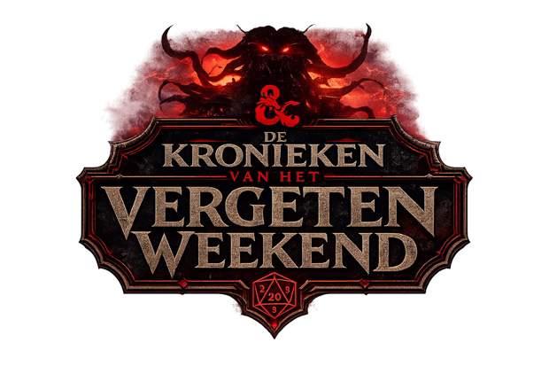

<!doctype html>
<html lang="nl">
<head>
<meta charset="utf-8">
<title>Questkaarten – De Kronieken van het Vergeten Weekend</title>
<link rel="stylesheet" href="https://fonts.googleapis.com/css2?family=Cinzel:wght@600;700;900&family=Libre+Baskerville:ital@0;1&family=Source+Sans+3:wght@400;600;700&display=swap">
<style>
/* Print sheet: A4 portrait, 3×3 poker cards (63×88 mm) per page with crop marks.
   Pages alternate fronts and backs; backs are mirrored per row for long-edge duplex. */
:root {
  --ink: #0b0607; --bone: #efe3d4; --ash: #b9a597; --ember: #e2323c;
  --bronze-hi: #f1dfb6; --bronze: #b8955f; --bronze-lo: #4a331b;
  --carved: "Cinzel", Georgia, serif; --body: "Source Sans 3", Arial, sans-serif; --display: "Libre Baskerville", Georgia, serif;
}
@page { size: A4; margin: 0; }
* { box-sizing: border-box; -webkit-print-color-adjust: exact; print-color-adjust: exact; }
html, body { margin: 0; background: #fff; }
.vel { width: 210mm; height: 297mm; position: relative; page-break-after: always; overflow: hidden; }
.raster { position: absolute; left: 10.5mm; top: 16.5mm; display: grid; grid-template-columns: repeat(3, 63mm); grid-auto-rows: 88mm; }
.snij { position: absolute; background: #999; }
.kaart { position: relative; width: 63mm; height: 88mm; overflow: hidden; color: var(--bone); font-family: var(--body);
  background: radial-gradient(ellipse 120% 60% at 50% 0%, rgba(150,18,28,.55), transparent 60%), radial-gradient(ellipse 100% 50% at 50% 110%, rgba(110,14,20,.5), transparent 60%), var(--ink); }
.kaart::before { content: ""; position: absolute; inset: 2.6mm; border: .5mm solid var(--bronze); box-shadow: inset 0 0 0 .3mm var(--bronze-lo), inset 0 0 0 .7mm rgba(226,50,60,.6); pointer-events: none; }
.voor { display: grid; grid-template-rows: auto auto auto 1fr auto; justify-items: center; padding: 5mm 5.5mm 4.6mm; text-align: center; gap: 1.6mm; }
.soort { font: 700 2.3mm/1 var(--carved); letter-spacing: .35em; padding-left: .35em; color: var(--ash); text-transform: uppercase; }
.med { width: 21mm; height: 21mm; }
.carved { font-family: var(--carved); font-weight: 700; text-transform: uppercase; letter-spacing: .06em;
  background: linear-gradient(180deg, var(--bronze-hi), #d8bf8f 45%, #9b7a4c); -webkit-background-clip: text; background-clip: text; color: transparent; }
.naam { font-size: 3.9mm; line-height: 1.12; text-wrap: balance; }
.tekst { align-self: center; font: 3.25mm/1.36 var(--body); color: var(--bone); text-wrap: pretty; }
.voet { width: 100%; display: flex; align-items: center; justify-content: space-between; border-top: .25mm solid rgba(184,149,95,.5); padding-top: 1.6mm; }
.voet .zegel { font: 600 2.1mm/1.15 var(--carved); color: var(--ash); text-transform: uppercase; letter-spacing: .06em; text-align: left; max-width: 34mm; }
.munten { display: flex; gap: .8mm; align-items: center; }
.munt { width: 4.6mm; height: 4.6mm; border-radius: 50%; background: radial-gradient(circle at 35% 30%, #fbe3b4, #b4823c 60%, #6d4a1a);  }
.plus { font: 700 3.4mm/1 var(--carved); color: var(--bronze-hi); margin-right: .6mm; }
.eigen .tekst { font-style: italic; font-family: var(--display); }
.lijnen { width: 100%; display: grid; gap: 4mm; margin-top: 1mm; }
.lijnen i { display: block; border-bottom: .25mm dashed rgba(184,149,95,.6); height: 0; }
.vier { display: flex; gap: 1.2mm; } .vier img { width: 9mm; height: 9mm; }
.achter { display: grid; place-items: center; }
.achter .logo { width: 50mm; }
.achter .q { position: absolute; bottom: 9mm; font-size: 3.4mm; letter-spacing: .5em; padding-left: .5em; }
.achter .ruit { position: absolute; inset: 7mm; border: .3mm solid rgba(184,149,95,.35); transform: none; }
</style>
</head>
<body>
<div id="vellen"></div>
<script src="../docs/a/quests.js"></script>
<script>
const MED = { vlam: "kaartbeeld/vlam.png", hoorn: "kaartbeeld/hoorn.png", schild: "kaartbeeld/schild.png", hart: "kaartbeeld/hart.png" };
const ZEGEL = { vlam: "Vlam van Waakzaamheid", hoorn: "Hoorn van Overvloed", schild: "Schild van Broederschap", hart: "Hart van de Ardennen" };
const SOORT = { solo: "Solo", duo: "Duo", groep: "Groep" };
const munten = (n) => `<span class="munten"><span class="plus">+${n}</span>${'<span class="munt"></span>'.repeat(n)}</span>`;
const voorkant = (q) => `<div class="kaart voor">
  <div class="soort">${SOORT[q.soort]} quest</div>
  
  <div class="naam carved">${q.naam}</div>
  <div class="tekst">${q.tekst}</div>
  <div class="voet"><span class="zegel">${ZEGEL[q.zegel]}</span>${munten(q.fiches)}</div></div>`;
const eigen = () => `<div class="kaart voor eigen">
  <div class="soort">Eigen quest</div>
  <div class="vier">${Object.values(MED).map((m) => ``).join("")}</div>
  <div class="naam carved">Verzin een quest</div>
  <div class="tekst">De groep bedenkt de opdracht. De Warlord of Games kiest het Zegel en de beloning.</div>
  <div class="lijnen"><i></i><i></i><i></i></div>
  <div class="voet"><span class="zegel">Zegel: …………</span><span class="plus">+ …</span></div></div>`;
const achterkant = () => `<div class="kaart achter"><div class="ruit"></div><div class="q carved">Quest</div></div>`;

const kaarten = [...window.QUESTS.map(voorkant), ...Array.from({ length: window.QUESTS_EIGEN }, eigen)];
const snijlijnen = () => { // short crop marks outside the 3×3 block
  const xs = [10.5, 73.5, 136.5, 199.5], ys = [16.5, 104.5, 192.5, 280.5]; let h = "";
  for (const x of xs) { h += `<span class="snij" style="left:${x - .1}mm;top:6mm;width:.2mm;height:8mm"></span><span class="snij" style="left:${x - .1}mm;top:283mm;width:.2mm;height:8mm"></span>`; }
  for (const y of ys) { h += `<span class="snij" style="top:${y - .1}mm;left:0;height:.2mm;width:8mm"></span><span class="snij" style="top:${y - .1}mm;left:202mm;height:.2mm;width:8mm"></span>`; }
  return h;
};
let html = "";
for (let i = 0; i < kaarten.length; i += 9) {
  const blok = kaarten.slice(i, i + 9);
  html += `<section class="vel">${snijlijnen()}<div class="raster">${blok.join("")}</div></section>`;
  // backs: same count, mirrored per row so they line up when printed double-sided (long edge)
  const rijen = []; for (let r = 0; r < blok.length; r += 3) { const rij = blok.slice(r, r + 3).map(achterkant); while (rij.length < 3) rij.push(`<div></div>`); rijen.push(...rij.reverse()); }
  html += `<section class="vel">${snijlijnen()}<div class="raster">${rijen.join("")}</div></section>`;
}
document.getElementById("vellen").innerHTML = html;
</script>
</body>
</html>
